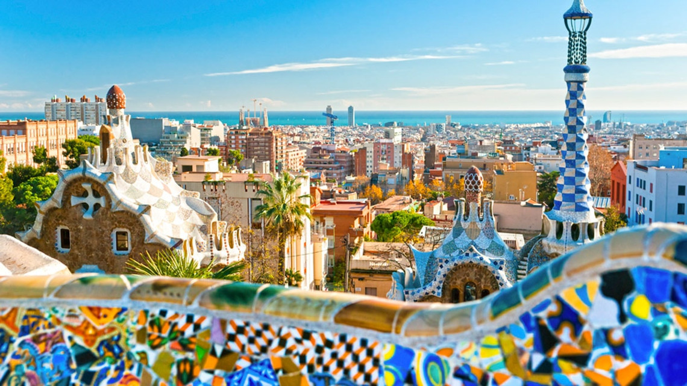

Where to stay
Our first recommendation is to stay in Castelldefels and chose a hotel or apartment at a walking distance from the campus. The gala dinner will be organized in Barcelona and some transfer buses will be arranged from the conference venue.
Staying in Barcelona could also be an option, but we recommend you to look for accommodation close to one of the train stations with direct trains to Castelldefels in order to reduce commuting time. Sitges would be also another option for those looking to stay into a typical Mediterranean coastal town. The commuter train from Barcelona or Sitges takes around 25 minutes to Castelldefels. Then you have a 10-minute walk to the UPC campus (see how to reach the UPC campus information).
There are a lot of options in the 3 cities. However, end of June is peak season in Catalonia, with many events going on besides tourist travelers. Our recommendation is to book your hotel as soon as possible since rooms fill up very quickly and/or might get very expensive!!!
We have secured a limited number of rooms at a fixed rate in three hotels in Castelldefels:
For students, we have secured a limited number of rooms at the UPC campus residence:
Residencia Pius Font i Quer [2’ walk]
In each room two students will be accommodated.
The price is 152 Euro for 4 nights (Monday to Thursday, Friday not included), with VAT included.
For reservations write an e-mail to raul.saez.garcia@upc.edu with subject "ICRAT2018 Dorms (participant family name)" and with the following information:
Hotel IBIS Castelldefels ** [20’ walk]
Double room single occupancy with breakfast: 60 Eur
Double room with breakfast: 65 Eur
For reservations write to H3208-GM@accor.com and use this promotional code: ICRAT-2018
Hotel Ciutat de Castelldefels *** [25’ walk]
Double room single occupancy with breakfast: 118 Eur
Double room with breakfast: 138 Eur
Hotel Playafels **** [30’ walk]
Double room single occupancy with breakfast: 135 Eur
Double room with breakfast: 155 Eur
Below we also provide some other recommendations and obviously, feel free to choose the accommodation that suits best your needs using portals such as booking or Airbnb.
Castelldefels:
This is the city where the conference is held. It is a Mediterranean city 20 km southwest of Barcelona, famous for its long beach (more than 5 km), where you can do water sports, bathe in its calm waters sunbathe, or just peacefully stroll along the shoreline. Some of the available hotels in Castelldefels are the following:
Close to the university (15-20 minute walk):
Hotel Pitort ** - Passeig Pitort, 170
Hotel Flora Parc *** - Av. Constitución nº44,
Close to the beach (25-35 minute walk to the UPC campus)
Best Western Hotel Mediterraneo **** - Pg. Marítimo 294,
Ciudad de Castelldefels*** – Pg. de la Marina, 212
Hotel Boutique dONNA **** Superior – Pg. Marítim 171
For more information about accommodation and what to do in Castelldefels, visit the following website: http://castelldefelsturismo.com/en/
Barcelona:
If you prefer to stay in Barcelona, our strong recommendation is to stay close to one of the train stations with direct trains to Castelldefels (see how to reach the UPC campus information).
You will find more interesting places to see if staying close to “Barcelona-Passeig de Gràcia” or “Barcelona-Estació de França”. Some recommendations are the following:
Close to Barcelona-Passeig de Gràcia
Onix Rambla - Rambla Catalunya, 24
El Avenida Palace - Gran Via, 605
Praktik Vinoteca - Balmes, 51
HCC Taber - Aragó, 256,
Catalonia Eixample 1864 - Roger de Llúria, 60
Close to Barcelona-Estació de França
Park Hotel – Av. Marques de Argentera, 11
Barcelona Hotel Colonial - Via Layetana, 3
Ciutat de Barcelona - Princesa, 33-35,
For more information about accommodation and what to do in Barcelona, visit the following website: http://www.barcelonaturisme.com/wv3/en/

Sitges:
Sitges is a Mediterranean coastal town sheltered by the Garraf mountains and due to its geographical position in the Mediterranean, it has a warm "micro-climate" that makes it possible to enjoy outdoor activities almost every day of the year.
Some of the available hotels in Sitges are the following (all of them are within walking distance of the train station (aprox. 10-minute walk):
Albenti Sitges Hotel & Restaurant - L’U de Maig del 1838, 19,
Hotel Celimar - Pg. de La Ribera, 20
Hotel Liberty - Isla de Cuba, 45
Hotel La Niña – Pg. de la Ribera, 65-68,
La Santa María – Pg. De la Ribera, 52,
For more information about accommodation and what to do in Sitges, visit the following website: http://www.visitsitges.com/en/
Other options:
Staying in the towns of Gavà, Viladecans, El Prat de Llobregat or close to Barcelona’s airport, would also be an option if you have difficulties to find accommodation in Castelldefels. The commuter train from Barcelona stops there before reaching Castelldefels.